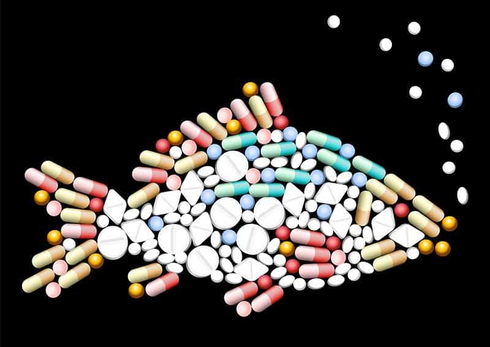

A Presença Inquietante de Hormônios na Água
Nos últimos anos, cresceu a preocupação em relação à presença de hormônios na água, um fenômeno que tem despertado a atenção de cientistas e ambientalistas. Estudos revelam que substâncias hormonais provenientes de produtos farmacêuticos, contraceptivos e até mesmo de excreções humanas têm encontrado seu caminho para os corpos d'água, resultando em uma contaminação ambiental que afeta ecossistemas aquáticos.

Impactos Sobre a Vida Aquática e Humana
A presença de hormônios na água não apenas representa uma ameaça para os organismos aquáticos, mas também levanta questões sobre os potenciais impactos na saúde humana. Pesquisas indicam que a exposição constante a esses compostos hormonais pode estar relacionada a distúrbios endócrinos e problemas de reprodução em seres humanos. O desafio agora é desenvolver estratégias eficazes de monitoramento e tratamento da água para mitigar esses efeitos adversos e preservar a qualidade dos recursos hídricos para as gerações futuras.
créditos
- Chat GPT
- Google
- Sublime Text
- Kauã frost